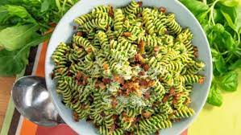

Pesto Pasta

Description
This recipe is one of my favourites, regularly cooked my my mum for my sister and me whislt growing up, before my sister turned vegan so refused to eat it any more. It is a beuatiful authentic Italian Pesto Pasta dish, combining fusilli pasta with a homemade basil pesto, with crispy panceta, toasted pine nuts and topped off with grated parmesan.
Ingredients
- 100g fresh basil
- Block of parmesan cheese
- 500g of fresh fusilli pasta
- 1 pack of panceta
- 1 pack of fresh pine nuts
- 250ml of extra virgin olive oil
- 1 lemon
- 1 clove of garlic
- Salt
Steps
- Toast 2 table spoons of pine nuts in a non-stick frying pan, until golden brown.
- Next, gather the basil leaves, and place into a food processor, along with 100ml of olive oil, 1 clove of garlic,the juice and zest of half a lemon, and the toasted pine nuts from the previous step. Blend into a rough, lose texture.
- Finely grate the parmesan cheese, and stir into the pesto mixture with some salt to taste. Add more olive oil if necessary.
- Fill a large sauce pan with water, and bring to the boil. Add a pinch of salt to the water.
- Once water has reached boiling point, add the whole packet of pasta. Cook for roughly 5 minutes, unitl al dente in texture. Drain into a collander.
- Chop the pack of pancetta into 1cm x 1cm size squares, then add to a large saute pan with a drizzle of olive oil. Fry on a medium-high temperature, until the fat has completely rendered.
- Toast the rest of the pack of pine nuts, until golden brown. Once cooked, add into the saute pan with the pancetta, stirring in the pesto sauce created in step 2.
- Once the pesto mixture is warm, add the now cooked pasta into the pan with the sauce, stirring through for an even coating.
- Serve with a further grating of parmesan over the top.
- Enjoy!